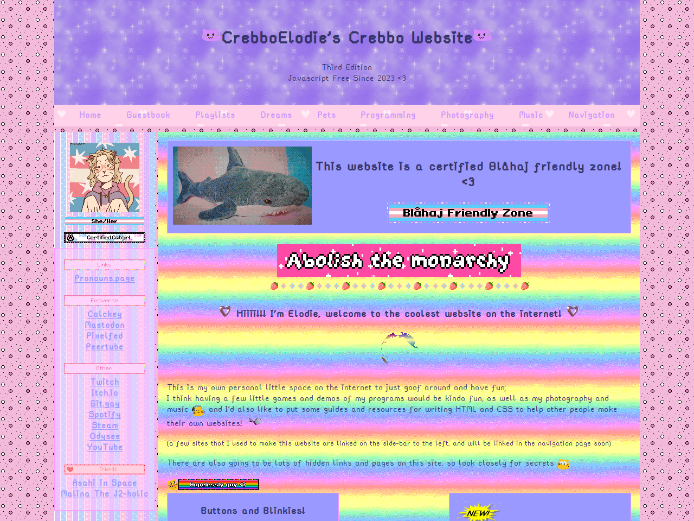
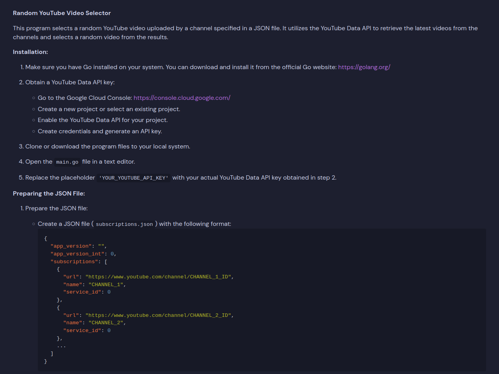

CrebboElodie's Crebbo Website
CrebboElodie's Crebbo WebsiteHere are some of my personal projects I'm working on, or have finnished
the source code for all of my projects, and other projects I haven't listed here, can be found at Git.gay
crebbo.neocities.org

this is my personal website I made on neocities.org to learn HTML and CSS, and to just make something cool where I can show off my work
piped.video-video-selector

This is a small program I wrote to give me a URL for a random video, from one of my YouTube subscriptions stored in a JSON file, for piped.video
Polyland 
NO IMAGE
Polyland is a fork of Hyprland, a customizable dynamic tiling Wayland compositor

These are the mods I've made for Minecraft
All the mods can be downloaded on Modrinth
Rotten flesh to Leather (Fabric)

This mod aims to make rotten flesh more useful by allowing it to be smelted into leather using a Furnace